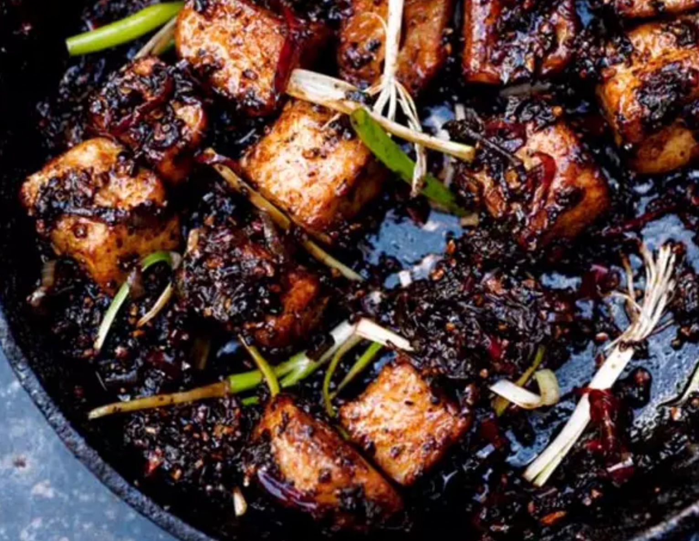

Black Pepper Tofu
Return to Home

Description
You will definitely surprise yourself with this one. It is an extremely delicious dish that’s quick and straightforward to make, but looks as if it’s been prepared at a top Chinese restaurant. It is fiery, both from the chillies and the black pepper; you can moderate this by reducing their quantity a little. However, the whole point is spiciness so don’t go too far.
Serving Size: 4 beautiful people
Ingredients
- 800g firm tofu (such as Tau Kwa brand)
- vegetable oil for frying
- cornflour to dust the tofu
- 150g butter
- 12 small shallots (350g in total), thinly sliced
- 8 fresh red chillies (fairly mild ones), thinly sliced
- 12 garlic cloves, crushed
- 3 tbsp chopped fresh root ginger
- 3 tbsp sweet soy sauce (kecap manis)
- 3 tbsp light soy sauce
- 4 tsp dark soy sauce
- 2 tbsp caster sugar
- 5 tbsp coarsely crushed black peppercorns (use a pestle and mortar or a spice grinder)
- 16 small and thin spring onions, cut into 3cm segments
Steps
- Start with the tofu. Pour enough oil into a large frying pan or wok to come 5mm up the sides and heat. Cut the tofu into large cubes, about 3 x 2cm. Toss them in some cornflour and shake off the excess, then add to the hot oil. (You’ll need to fry the tofu pieces in a few batches so they don’t stew in the pan.) Fry, turning them around as you go, until they are golden all over and have a thin crust. As they are cooked, transfer them onto kitchen paper.
- Remove the oil and any sediment from the pan, then put the butter inside and melt it. Add the shallots, chillies, garlic and ginger. Sauté on low to medium heat for about 15 minutes, stirring occasionally, until the ingredients have turned shiny and are totally soft. Next, add the soy sauces and sugar and stir, then add the crushed black pepper.
- Add the tofu to warm it up in the sauce for about a minute. Finally, stir in the spring onions. Serve hot, with steamed rice.
Return to Home